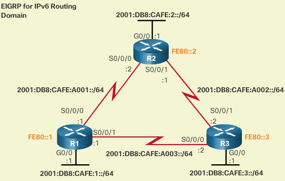
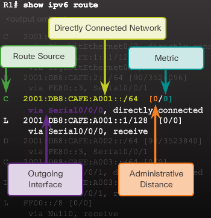

Dynamic Routing¶
Router metrics are metrics used by a router to make routing decisions. A metric is typically one of many fields in a routing table.
Metrics are used to determine whether one route should be chosen over another. The routing table stores possible routes, while link-state or topological databases may store all other information as well. For example, Routing Information Protocol uses hopcount (number of hops) to determine the best possible route. The route will go in the direction of the gateway with the lowest metric. The direction with the lowest metric can be a default gateway.
Router metrics can contain any number of values that help the router determine the best route among multiple routes to a destination. A router metric typically based on information like path length, bandwidth, load, hop count, path cost, delay, maximum transmission unit (MTU), reliability and communications cost.
Dynamic Routing Protocols Components¶
Routing protocols are used to facilitate the exchange of routing information between routers. A routing protocol is a set of processes, algorithms, and messages that are used to exchange routing information and populate the routing table with the routing protocol’s choice of best paths. The purpose of dynamic routing protocols includes:
- Discovery of remote networks
- Maintaining up-to-date routing information
- Choosing the best path to destination networks
- Ability to find a new best path if the current path is no longer available
The main components of dynamic routing protocols include:
- Data structures - Routing protocols typically use tables or databases for its operations. This information is kept in RAM.
- Routing protocol messages - Routing protocols use various types of messages to discover neighboring routers, exchange routing information, and other tasks to learn and maintain accurate information about the network.
- Algorithm - An algorithm is a finite list of steps used to accomplish a task. Routing protocols use algorithms for facilitating routing information and for best path determination.
Routing protocols allow routers to dynamically share information about remote networks and automatically offer this information to their own routing tables.
Routing protocols determine the best path, or route, to each network. That route is then offered to the routing table. The route will be installed in the routing table is there is not another routing source with a lower administrative distance. For example, a static route with an administrative distance of 1 will have precedence over the same network learned by a dynamic routing protocol. A primary benefit of dynamic routing protocols is that routers exchange routing information when there is a topology change. This exchange allows routers to automatically learn about new networks and also to find alternate paths when there is a link failure to a current network.
Static Routing Uses¶
Static routing has several primary uses, including:
- Providing ease of routing table maintenance in smaller networks that are not expected to grow significantly.
- Routing to and from a stub network, which is a network with only one default route out and no knowledge of any remote networks.
- Accessing a single default route (which is used to represent a path to any network that does not have a more specific match with another route in the routing table).
Pros static¶
- Predictability: route to destination is always the same.
- Network bandwidth overhead / no extra cpu,ram resources needed: Static routing has zero overhead, whereas all dynamic routing protocols have some degree of overhead. For example, on a network with 200 segments, the router will send updates from each interface every 30 seconds, and those updates are about 3KB of data. Over the course of a day, this traffic adds up.
- Easy to configure: This issue is relative, depending on the size of your network. Although small networks are easy to configure, as a network grows, applying changes to all the routers can become a big task.
- Very secure, No advertisements are sent.
Cons static¶
- Lack of scalability: For the 200 segment network mentioned previously, which possibly contains 200 routers, you could be dealing with thousands of routing table entries. Manually calculating all those routes and keeping them up-to-date would be a Herculean task and very prone to error. Even if you implement a good network-addressing design that allows for route summarization, you are still left with an overwhelming number of routes to manage.
- Large network implementation: When working with a network of 200 routers, the task of updating one route can become a complex task, especially if you update the routes in the wrong order. In that case, you could lose access to a large section of the network until someone visits that router with a rollover cable or connects from another area of the network.
- No redundancy: Dynamic routing protocols can update routing tables in the event of device or interface failure, so if there are multiple possible paths, these protocols will continue to allow data flow. Static routes do not allow for this automatic failover or redundant paths, so if you have a failure, you must manually adjust routes to move data through an alternative path.
Dynamic routing is the best choice for large networks like the one shown.
Dynamic Routing Uses¶
Pros Dynamic¶
- Suitable in all topologies where multiple routers are required
- Generally independent of the network size
- Automatically addapts topology to reroute traffic if possible
Cons Dynamic¶
- Can be more complex to implement
- Less secure. Additional config settings are required to secure.
- Route depends on the current topology.
- Requires additional CPU, RAM, and link bandwidth.
RIPv2¶
enable/disable¶
R1# conf t
R1(config)# router rip
R1(config-router)# version 2
verify rip routing¶
R1# show ip protocols
R1# show ip protocols | section Default
R1# show ip route | begin Gateway
disable auto summarization¶
R1(config)# router rip
R1(config-router)# no auto-summary
R1(config-router)# end
R1# show ip protocols | section Automatic
Warning
auto-summary = classful, no auto-summary = you can see /25 routes = classless, don’t confuse with summarization. If you want a summary address you can apply the following on the outgoing interface you want de summary address advertised
ip summary-address rip 192.168.0.0 255.255.252.0
configure passive interfaces¶
By default, RIP updates are forwarded out all RIP-enabled interfaces. However, RIP updates really only need to be sent out interfaces that are connected to other RIPenabled routers.

For instance, refer to the topology above. RIP sends updates out of its G0/0 interface even though no RIP device exists on that LAN. R1 has no way of knowing this and, as a result, sends an update every 30 seconds. Sending out unneeded updates on a LAN impacts the network in three ways:
- Wasted Bandwidth - Bandwidth is used to transport unnecessary updates. Because RIP updates are either broadcasted or multicasted, switches also forward the updates out all ports.
- Wasted Resources - All devices on the LAN must process the update up to the transport layers, at which point the devices will discard the update.
- Security Risk - Advertising updates on a broadcast network is a security risk. RIP updates can be intercepted with packet sniffing software. Routing updates can be modified and sent back to the router, corrupting the routing table with false metrics that misdirect traffic.
Use the passive-interface router configuration command to prevent the transmission of routing updates through a router interface, but still allow that network to be advertised to other routers. The command stops routing updates out the specified interface. However, the network that the specified interface belongs to is still advertised in routing updates that are sent out other interfaces.
Configure passive interface on G0/0 and return to privileged EXEC mode.
R2(config)# router rip
R2(config-router)# passive-interface g0/0
R2(config-router)# end
R2#
*Mar 10 16:33:32.391: %SYS-5-CONFIG_I: Configured from console by console
Verify the RIP protocol settings on R2.
R2# show ip protocols
*** IP Routing is NSF aware ***
Routing Protocol is "rip"
Outgoing update filter list for all interfaces is not set
Incoming update filter list for all interfaces is not set
Sending updates every 30 seconds, next due in 17 seconds
Invalid after 180 seconds, hold down 180, flushed after 240
Redistributing: rip
Default version control: send version 2, receive version 2
Interface Send Recv Triggered RIP Key-chain
Serial0/0/0 2 2
Serial0/0/1 2 2
Automatic network summarization is not in effect
Maximum path: 4
Routing for Networks:
192.168.2.0
192.168.3.0
192.168.4.0
Passive Interface(s):
GigabitEthernet0/0
Routing Information Sources:
Gateway Distance Last Update
192.168.2.1 120 00:00:24
Gateway Distance Last Update
192.168.4.1 120 00:00:23
Distance: (default is 120)
R2#
You are now logged into R3. Configure passive interface to be the default setting. Remove the passive interface setting from S0/0/1 and return to privileged EXEC mode.
R3(config)# router rip
R3(config-router)# passive-interface default
R3(config-router)# no passive-interface s0/0/1
R3(config-router)# end
R3#
*Mar 10 16:34:28.899: %SYS-5-CONFIG_I: Configured from console by console
Verify the RIP protocol settings on R3.
R3# show ip protocols
*** IP Routing is NSF aware ***
Routing Protocol is "rip"
Outgoing update filter list for all interfaces is not set
Incoming update filter list for all interfaces is not set
Sending updates every 30 seconds, next due in 15 seconds
Invalid after 180 seconds, hold down 180, flushed after 240
Redistributing: rip
Default version control: send version 2, receive version 2
Interface Send Recv Triggered RIP Key-chain
Serial0/0/1 2 2
Automatic network summarization is not in effect
Maximum path: 4
Routing for Networks:
192.168.4.0
192.168.5.0
Passive Interface(s):
Embedded-Service-Engine0/0
GigabitEthernet0/0
GigabitEthernet0/1
GigabitEthernet0/3
Serial0/0/0
RG-AR-IF-INPUT1
Routing Information Sources:
Gateway Distance Last Update
192.168.4.2 120 00:00:23
Distance: (default is 120)
R3#
There is no need for R1, R2, and R3 to forward RIP updates out of their LAN interfaces. The configuration in Figure 2 identifies the R1 G0/0 interface as passive. The show ip protocols command is then used to verify that the Gigabit Ethernet interface was passive. .. note:: Notice that the G0/0 interface is no longer listed as sending or receiving version 2 updates, but instead is now listed under the Passive Interface(s) section. Also notice that the network 192.168.1.0 is still listed under Routing for Networks, which means that this network is still included as a route entry in RIP updates that are sent to R2.
Note
All routing protocols support the passive-interface command.
configure the LAN interface as a passive interface on R2 and R3.
R2(config)# router rip
R2(config-router)# passive-interface g0/0
R2(config-router)# end
Verify the RIP protocol settings on R2
R2# show ip protocols
R3(config)# router rip
R3(config-router)# passive-interface default
R3(config-router)# no passive-interface s0/0/1
R3(config-router)# end
Verify the RIP protocol settings on R3
R3# show ip protocols
As an alternative, all interfaces can be made passive using the passive-interface default command. Interfaces that should not be passive can be re-enabled using the no passive-interface command.
propagate a default route¶

To propagate a default route in RIP, the edge router must be configured with:
- A default static route using the ip route 0.0.0.0 0.0.0.0 command.
- The default-information originate router configuration command. This instructs R1 to originate default information, by propagating the static default route in RIP updates.
R1(config)# ip route 0.0.0.0 0.0.0.0 s0/0/1 209.165.200.226
R1(config)# router rip
R1(config-router)# default-information originate
R1(config-router)# end
Example above configures a fully-specified default static route to the service provider and then the route is propagated by RIP. Notice that R1 now has a Gateway of Last Resort and default route installed in its routing table.
exercise example¶
a router that is connected to an isp ------------------------------------ hostname R1 ! ip cef no ipv6 cef ! interface GigabitEthernet0/0 ip address 192.168.1.1 255.255.255.0 duplex auto speed auto ! interface GigabitEthernet0/1 no ip address duplex auto speed auto shutdown ! interface GigabitEthernet0/2 no ip address duplex auto speed auto shutdown ! interface Serial0/0/0 ip address 192.168.2.1 255.255.255.0 clock rate 2000000 ! interface Serial0/0/0 ip address 192.168.2.1 255.255.255.0 clock rate 2000000 ! interface Serial0/0/1 ip address 209.165.200.225 255.255.255.252 ! interface Vlan1 no ip address shutdown ! router rip version 2 passive-interface GigabitEthernet0/0 network 192.168.1.0 network 192.168.2.0 default-information originate ! ip classless ip route 0.0.0.0 0.0.0.0 Serial0/0/1
Remote Networks in Routing table¶
- Route Source: ids how route was learned
- Dest Network: ids address of the remote network
- Administrative Distance: ids trustworthiness of route source
- Metric: ids value assigned to reach remote NW. Lower is better
- Next hop: ids ipv4 address of next router to forward packet to
- route timestamp: ids from when the route was last heard
- Outgoing interface: ids exit interface to use to forward packet to final destination

Routing table terms¶
- Ultimate route:
has next-hop ip and/or exit interface
- Level 1 route:
- a route with a subnet mask equal or less than classful mask of the network address
Network route - equal to that of classful mask
Supernet route - less than classful mask, eg summary address
Default route - static route with the address 0.0.0.0/0
Note
source of Level 1 route = D.C. network, static, or dynamic routing protocol
Note
level 1 route are also ultimate routes
Level 1 parent route: Level 1 network route (=mask) that is subnetted:
Note
L1 parent route = never an ultimate route e.g. 172.16.0.0/16 #of subnets, #different masks
Level 2 child routes aka subnet route: subnet of a classful network address:
Note
L1 parent route contains L2 child routes
Warning
no L1 parent = it ain’t no L2 child
172.16.0.0 172.16.1.0/24 172.16.2.0/24 172.16.3.0/24 172.16.4.0/28 209.165.200.0 209.165.200.224/30 209.165.200.228/30 209.165.200.232/30
Route lookup process¶
- if a level 1 ultimate route (exit|nhop) = forward
- if lvl 1 parent route (equal to snmask & never and no exit|nhop) then
- check if match with level 2 child (subnet) route (=bigger than nwmask)
- continue searching lvl 1 supernet routes (=less than nwmask) for match including default route if there is one
- sorry no match, drop it like it’s hot
Note
A route referencing only a next-hop IP address and not an exit interface, must be resolved to a route with an exit interface, if Cisco Express Forwarding (CEF) is not being used. Without CEF, a recursive lookup is performed on the next-hop IP address until the route is resolved to an exit interface. CEF is enabled by default.
IPv6 Routing Table Entries¶
reference topology
Note
Because IPv6 is classless by design, all routes are effectively L1 ultimate routes. There is no L1 parent or L2 child routes
R1,2,3 in full mesh topology. All routers have redundant paths to various networks. R2 is the edge router to the ISP, however a default static route is not being advertised EIGRP is cfgd on all of them
Directly connected routes on R1 = show ipv6 route –> C and L
Warning
RIP configuration on a router should contain network statements for connected networks only. Remote networks are learned from routing updates from other routers.
QnA Chapter 3¶
What is a purpose of the network command when configuring RIPv2 as the routing protocol?
V It identifies the interfaces that belong to a specified network.
X It specifies the remote network that can now be reached.
It immediately advertises the specified network to neighbor routers with a classful mask.
It populates the routing table with the network entry.
The network command is used to advertise the directly connected networks of a router. It enables RIP on the interfaces that belong to the specified network.
The command being entered by the engineer will cause RIPv2 to activate on the interface for the 192.168.10.0 network. If RIPv1 is configured, the router will send only version 1 updates, but will listen for both version 1 and version 2 updates. If RIPv2 is configured, the router will send and listen to only version 2 updates.